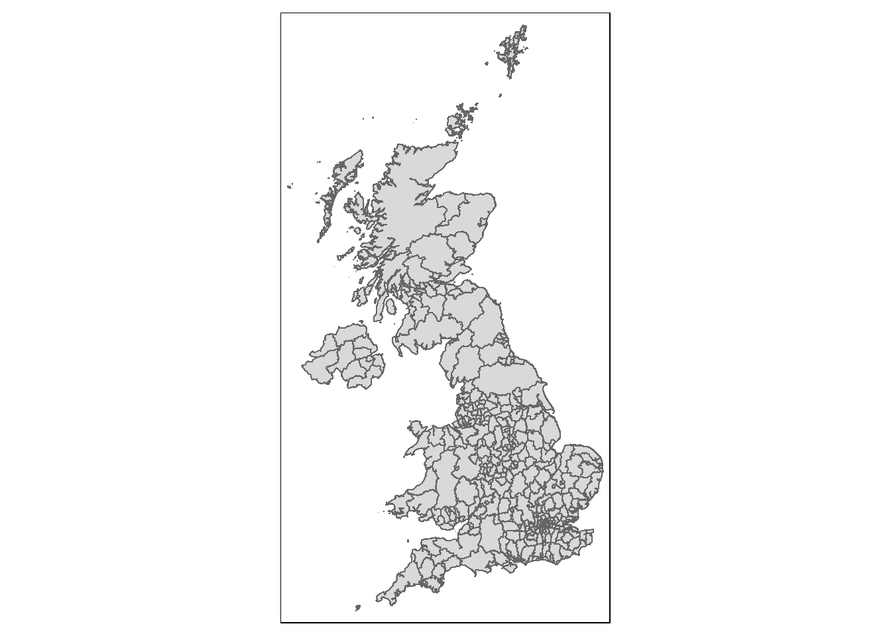
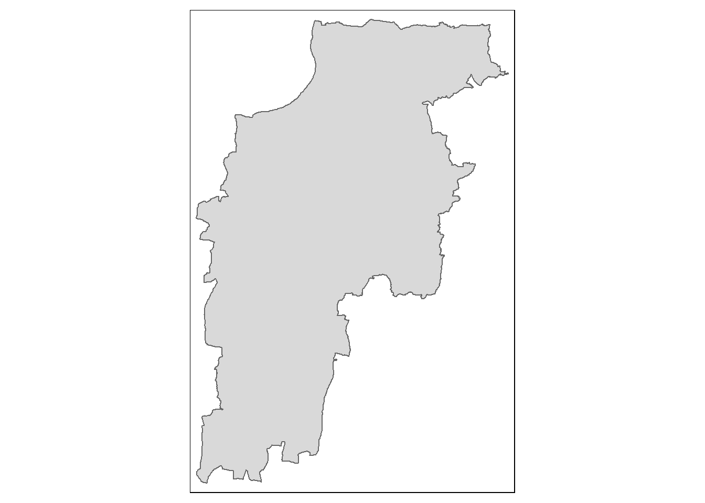
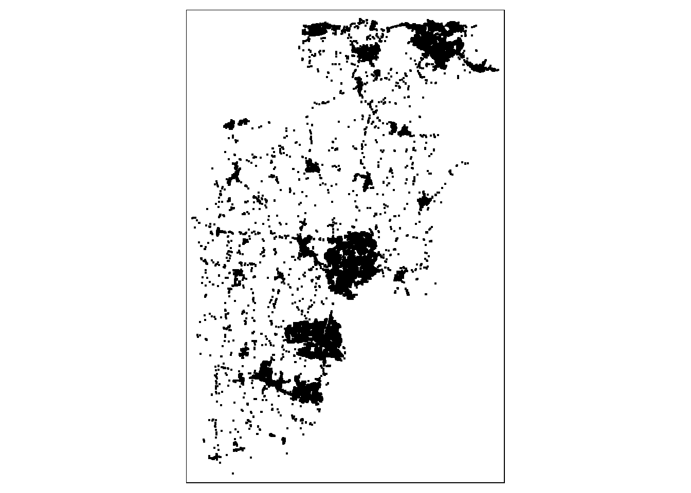

library(httr)
library(here)
library(janitor)
#read in and store the variables you have just created for your API keys
source("keys.r")
# Page size (max 5000)
query_size <- 5000
#I am using the Here package to put the CSV downloaded into a specific folder inside the current here() route - you will probably want to put yours somewhere else. Check there here package for details on how this works.
output_file <- here("output.csv")
# Base url and example query parameters
base_url <- 'https://epc.opendatacommunities.org/api/v1/domestic/search'
#this parameter specifies a particular local authority - this is Mid-Sussex
query_params <- list(size = query_size, `local-authority` = 'E07000228')
# Set up authentication
headers <- c(
'Accept' = 'text/csv',
'Authorization' = epc_auth
)
# Keep track of whether we have made at least one request for CSV headers and search-after
first_request <- TRUE
# Keep track of search-after from previous request
search_after <- NULL
# Open a connection to write to the output file
file_conn <- file(output_file, "w")
# Loop over entries in query blocks of up to 5000 to write all the data into a file
while (!is.null(search_after) || first_request) {
# Only set search-after if this isn't the first request
if (!first_request) {
query_params[["search-after"]] <- search_after
}
# Make request
response <- GET(url = base_url, query = query_params, add_headers(.headers=headers))
response_body <- content(response, as = "text")
search_after <- headers(response)$`X-Next-Search-After`
# For CSV data, only keep the header row from the first response
if (!first_request && response_body != "") {
response_body <- strsplit(response_body, "\n")[[1]][-1]
}
# Write received data
writeLines(response_body, file_conn)
first_request <- FALSE
}
# Close the file connection
close(file_conn)Spatial Analysis of Building Energy Performance
This guide will walk you through the process of downloading, geo-coding and then mapping data from The UK Government’s Department for Levelling Up, Housing and Communities (DLUHC) Domestic Energy Performance Certificate (EPC) Data.
Part 1 is a guide to downloading EPC and Ordnance Survey’s geo-referenced Unique Property Reference Number (UPRN) data from two APIs and linking the two datasets for mapping using R.
Part 2 will explain how to load your newly linked data into QGIS and map it, adding additional contextual data from the OS Zoomstack.
If you are not familiar with R and you want to get straight onto the mapping, download this sample dataset from here and skip straight down to Part 2 - Making Some Maps
Part 1 - Getting the Data
Downloading R and RStudio
To run this tutorial you should download and install both R and RStudio onto your machine. Download and install R before you Download and Install R Studio
Download R from here: https://www.r-project.org/
Download RStudio from here: https://posit.co/products/open-source/rstudio/
If you are unfamiliar with R and RStudio, there are lots of written and video guides out there. Here is an excellent place to start: https://education.rstudio.com/learn/beginner/
Before going any further, make sure you are happy with writing and saving code in .r or .rmd files in a working directory, installing and librarying packages, running basic scripts.
Creating a file to store your API keys
We will be using API keys that you will need to sign up and have an account for.
Visit - https://epc.opendatacommunities.org/ - and sign-up so you can access the data
Once signed up, sign in and wait for the email link to be sent to you to connect to the data interface
Scroll to the very bottom of the Domestic EPC search front page - here you should find your api key, however, click on the developer API key link below that which should take you to this page - https://epc.opendatacommunities.org/docs/api
Click on the Domestic Energy Performance Certificates API link, which should take you to this page - https://epc.opendatacommunities.org/docs/api/domestic
Open a new R Script file in RStudio - here you will save the various API key and token information you will need to access the API. Call this file keys.r and save it to your working directory
Back on the domestic EPC API page, it will give you information about your API username (probably your email address you signed up with) and your API key. It will also give you two authentication tokens. You need to save these in your new keys.r file.
In your new keys.r file, create 4 new variables and assign them the various keys and tokens you have been given, exactly as below (don’t forget the quotation marks!):
epc_user <- “your_email@your_domain.com”
epc_api_key <- “3a9f3fc………………………………”
epc_auth_token <- “YS5kZW……………………….”
epc_auth <- “Basic YS5kZW5………………………”
Save your keys.r file and close it.
Downloading EPC Data using the API
The code below (translated into R - thanks ChatGPT - from the python examples given here: https://epc.opendatacommunities.org/docs/api/domestic) will download all of the data for a particular local authority of interest.
Before running this script, make sure you have installed the three packages that are libraried at the start.
This script downloads data for one particular local authority in the UK - Mid Sussex - code E07000228. If you want to download data for another local authority, simply change the code - https://www.get-information-schools.service.gov.uk/Guidance/LaNameCodes
The API documentation is very good, and you can filter your results not just on local authority, but other spatial variables like postcode - or by any of the variables such as type of property (e.g. bungalow), size of property, EPC rating, when the certificate was lodged - or indeed any combination. Use the API documentation to edit the code below.
Read the CSV file back in to your environment
library(tidyverse)
epc_data <- read_csv(here("output.csv")) %>%
clean_names()Get UPRN Data from the OS API
The OS Data Hub has an API which can also be used to download various Open and licence restricted datasets - https://osdatahub.os.uk/ - using the API directly to access the data requires an amount of specialist knowledge (although there is some work in progress documentation here - https://github.com/howaskew/OSapiR), however colleagues at OS have also created an R package called osdatahub - https://cran.r-project.org/web/packages/osdatahub/index.html (versions are also available in Python and Javascript - https://github.com/OrdnanceSurvey/os-api-resources)
Below we use the osdatahub package to download the Open UPRN dataset from the OS servers.
library(osdatahub)
library(zip)
library(tidyverse)
#get a list of the open datasets - uncomment to see
#list_os_opendata()
#we're interested in the OpenUPRN dataset, so get all of the relevant info into an object
uprn = list_os_opendata('OpenUPRN')
#opening up the object, can see that we want the csv, which is the first entry
uprn$fileName[1][1] "osopenuprn_202402_csv.zip"#now we can download it:
download_os_opendata(uprn,
file_name = uprn$fileName[1],
output_dir = tempdir())
#get the path to the zipfile you have just downloaded
zip_file <- file.path(tempdir(), uprn$fileName[1])
#find out what the name of the csv is within the zipfile
zip_contents <- zip_list(zip_file)
zip_contents$filename[3][1] "osopenuprn_202402.csv"csv_file <- zip_contents$filename[3]
# Unzip the file
unzip(zipfile = zip_file, exdir = tempdir())
# Read data from the CSV file
uprn_data <- read_csv(file.path(tempdir(), csv_file)) %>%
clean_names()Joining EPC data to UPRN data and cleaning for mapping
First we will get some Local Authority Boundaries from the Office for National Statistics to ‘trim’ our EPC data with. Sometimes, due to errors in UPRN address matching, some properties are outside of the local authority we are interested in, so we need to drop these from our analysis dataset (we could try to fix, but this will take too long in this example so we’ll just drop them).
Visit the ONS Geoportal website - https://geoportal.statistics.gov.uk/ - and navigate to a recent set of Local Authority District Boundaries - we’ll go for the ones that are ‘Full extent of the realm and clipped (BFC)’ - at the time of writing, the latest available are from 2023, so we’ll use those.
If you click on the dataset, you should be presented with a map page - for example, like this: https://geoportal.statistics.gov.uk/datasets/2f0b8074b6ab4af6a1ec30eb66317d12_0/explore?location=54.959083%2C-3.316939%2C6.21
At the bottom of the page, clicking on the “I want to use this” button reveals - under the ‘View API Resources’ button - a URL to a GeoJson file that you can download. You can copy this and paste it in the code as below
Be warned - occasionally the URL strings to these files change and the files themselves break. If this happens, try again with another dataset - perhaps from a different year or month. Eventually you should find one that works.
library(geojsonsf)
library(tmap)The legacy packages maptools, rgdal, and rgeos, underpinning the sp package,
which was just loaded, were retired in October 2023.
Please refer to R-spatial evolution reports for details, especially
https://r-spatial.org/r/2023/05/15/evolution4.html.
It may be desirable to make the sf package available;
package maintainers should consider adding sf to Suggests:.Breaking News: tmap 3.x is retiring. Please test v4, e.g. with
remotes::install_github('r-tmap/tmap')#download some local authority boundaries from the ONS Geoportal
LAD_sf <- geojson_sf("https://services1.arcgis.com/ESMARspQHYMw9BZ9/arcgis/rest/services/Local_Authority_Districts_May_2023_UK_BFC_V2/FeatureServer/0/query?outFields=*&where=1%3D1&f=geojson") Warning in readLines(con): incomplete final line found on
'https://services1.arcgis.com/ESMARspQHYMw9BZ9/arcgis/rest/services/Local_Authority_Districts_May_2023_UK_BFC_V2/FeatureServer/0/query?outFields=*&where=1%3D1&f=geojson'#just plot the boundaries quickly to see if they have downloaded OK
qtm(LAD_sf)
# filter for Mid-Sussex again
Local_sf <- LAD_sf %>% filter(LAD23CD == "E07000228")
qtm(Local_sf)
Now we can join some coordinates to our trimmed EPC data to enable us to map it.
#first have a look at the columns within the file. This should tell you that in both files, there are columns called "uprn" - if you haven't cleaned the column headers with janitor, they could be capitalised or something else.
str(epc_data)
str(uprn_data)#Join the epc_data and uprn_data files together using a left_join() function. Join on the common UPRN identifier. Then, immediately filter out all of the rows without uprns (and therefore coordinates) by piping the newly joined data into a filter function
epc_coords <- left_join(epc_data, uprn_data, by = join_by(uprn == uprn)) %>%
filter(!is.na(uprn))
#now write your new clean, joined data file out to a CSV
write_csv(epc_coords, here("epc_coords.csv"))Mapping Your New Data
It is possible to map your data directly in R, however, in this exercise we are going to eventually map it in QGIS.
We can have a quick glimpse at the data though by converting our new joined dataset into a simple features (sf) object and viewing it.
library(sf)Linking to GEOS 3.11.2, GDAL 3.6.2, PROJ 9.2.0; sf_use_s2() is TRUE#convert the csv with coordinates in it to an sf object
epc_sf <- st_as_sf(epc_coords, coords=c("x_coordinate", "y_coordinate"), crs=27700)
#set the CRS to british national grid
st_crs(Local_sf)Coordinate Reference System:
User input: 4326
wkt:
GEOGCS["WGS 84",
DATUM["WGS_1984",
SPHEROID["WGS 84",6378137,298.257223563,
AUTHORITY["EPSG","7030"]],
AUTHORITY["EPSG","6326"]],
PRIMEM["Greenwich",0,
AUTHORITY["EPSG","8901"]],
UNIT["degree",0.0174532925199433,
AUTHORITY["EPSG","9122"]],
AXIS["Latitude",NORTH],
AXIS["Longitude",EAST],
AUTHORITY["EPSG","4326"]]Local_sf <- st_transform(Local_sf, 27700)
#clip it as some weird places are in the dataset - data errors.
epc_sf_clip <- epc_sf[Local_sf,]#try and map it with tmap
library(tmap)
# set to plot otherwise if you set to view, it will almost certainly crash.
tmap_mode("plot")tmap mode set to plottingqtm(epc_sf_clip)